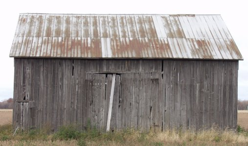

Removing Perspective Distortion In Texture Preparation
by Ron Picardi
Overview
Some of the best and most realistic textures are prepared from digital photos. However it is often impossible to get a perfectly squared texture from a photo.
By way of example, here I am preparing a tin barn roof for use as a texture.
As you can see, even though the barn was photographed nearly head on, it is impossible to photograph the tin roof that way. The solution is to use the special effect tools in your imaging program to correct the problem. In this example, I will be using Paintshop Pro 7.x, but the same principles would apply no matter what software you are using.
